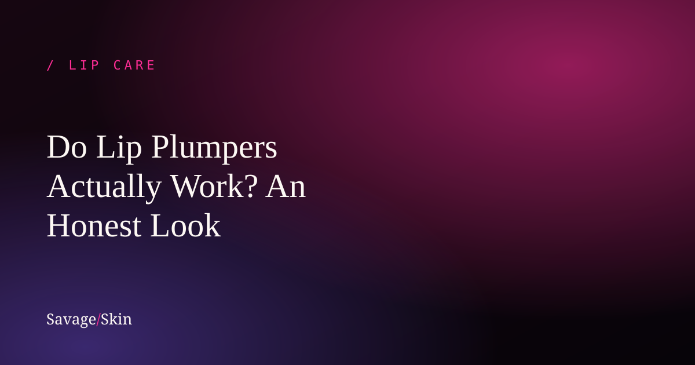

Do Lip Plumpers Actually Work? An Honest Look

Straight answer: yes, but temporarily — and "plump" comes in two very different flavors. Some plumpers work by mildly irritating your lips to make them swell (that's the tingle/burn), and some work by deeply hydrating so lips look fuller and smoother. The first fades in an hour or two and can irritate sensitive lips; the second is gentler and builds over time. Here's the honest science so you know what you're actually buying.
How lip plumpers actually work
There are two mechanisms, and brands aren't always clear about which one they're using:
1. Irritant plumpers (the tingle)
These use ingredients like menthol, capsaicin (chili), cinnamon, or ginger to mildly irritate the skin. That triggers a little blood flow and temporary swelling, so your lips look fuller — for maybe 30 minutes to 2 hours. That tingling or burning is the mechanism.
The honest downside: it's literally low-grade irritation. For sensitive lips it can cause stinging, redness, dryness, or even make chapping worse over time. If your lips are already dry, this is often the wrong tool.
2. Hydration plumpers (the gentle kind)
These use humectants like hyaluronic acid and peptides to draw water into the lips. Well-hydrated lips genuinely look fuller, smoother, and more defined — fine lines plump out, color looks richer. It's subtler than the tingle method, but it's gentle, it doesn't hurt, and the benefits actually compound the more consistently you use it (because you're improving lip health, not just inflaming them).
So, do they "work"?
For temporary, makeup-level fullness: yes. No topical product permanently changes your lip size — only fillers (an injectable cosmetic procedure) do that, and that's a whole different decision with real costs and risks. Anyone selling a balm that claims permanent plumping is overselling. A good plumper makes your lips look their fullest, healthiest, most hydrated self — and that's a real, visible result.
How to get fuller-looking lips (without the burn)
- Hydrate, hydrate, hydrate. Plump, healthy lips start with moisture. Use a treatment with hyaluronic acid and sealing ingredients. (Our Savage Skin lip treatment leans on the hydration-plump route — fuller-looking lips from genuine moisture, not an irritating sting.)
- Exfoliate gently (1–2x a week) so lips are smooth and reflect light better.
- Use a glossy finish. Light reflects off shiny lips and reads as fuller — part of why glazed/glossy lips trend so hard.
- Line just outside your natural edge with a liner if you want more, makeup-wise.
- Stay consistent. The hydration approach looks better week over week, unlike the tingle that fades by lunch.
A note on safety
If a plumper burns rather than mildly tingles, that's too much irritation — wipe it off. Discontinue if you get persistent redness, swelling that doesn't settle, or worsening dryness. People with sensitive skin, eczema, or allergies to things like cinnamon/menthol should patch-test or skip irritant plumpers entirely. And again — fillers are a medical procedure; research a licensed provider, not a TikTok trend, if you go that route.
Frequently asked questions
Do lip plumpers work permanently?
No. Topical plumpers are temporary (minutes to a couple hours for irritant types; longer-lasting smoothness for hydration types). Only fillers change lip size lastingly.
Why do lip plumpers tingle or burn?
Irritant plumpers (menthol, capsaicin, cinnamon) cause mild inflammation that swells the lips. The tingle is the mechanism — and it can irritate sensitive lips.
Are lip plumpers bad for your lips?
The hydrating kind are gentle and good for lip health. The irritant kind can dry out or inflame sensitive lips with frequent use. Choose based on your lips.
How can I plump my lips naturally?
Keep them deeply hydrated, exfoliate gently, add a glossy finish, and stay consistent. Healthy, moisturized lips simply look fuller.